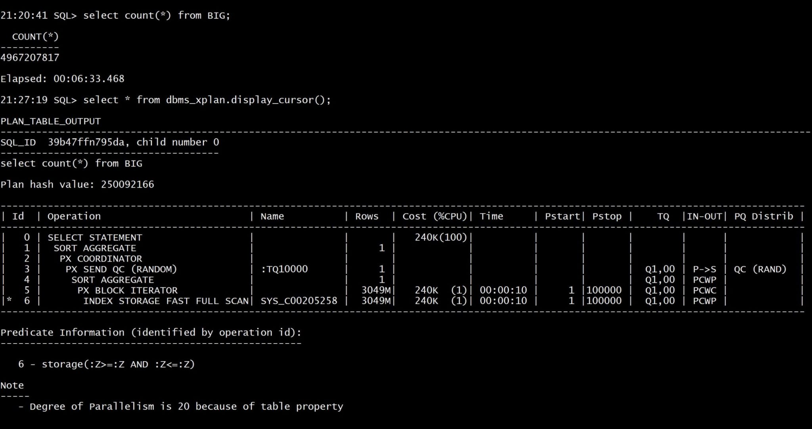

This was first published on https://www.dbi-services.com/blog/key-value-access-always-scale/ (2020-11-04)
Republishing here for new followers. The content is related to the versions available at the publication date.
.
I have written about some NoSQL myths in previous posts (here and here) and I got some feedback from people mentioning that the test case was on relatively small data. This is true. In order to understand how it works, we need to explain and trace the execution, and that is easier on a small test case. Once the algorithm is understood it is easy to infer how it scales. Then, if readers want to test it on huge data, they can. This may require lot of cloud credits, and I usually don’t feel the need to do this test for a blog post, especially when I include all the code to reproduce it on a larger scale.
But this approach may be biased by the fact that I’ve been working a lot with RDBMS where we have all tools to understand how it works. When you look at the execution plan, you know the algorithm and can extrapolate the numbers to larger tables. When you look at the wait events, you know on which resource they can scale with higher concurrency. But times change, NoSQL databases, especially the ones managed by the cloud providers, provide only a simple API with limited execution statistics. Because that’s the goal: simple usage. And this is why people prefer to look at real scale executions when talking about performance. And, as it is not easy to run a real scale Proof of Concept, they look at the well-known big data users like Google, Facebook, Amazon…
I was preparing my DOAG presentation “#KnowSQL: Where are we with SQL, NoSQL, NewSQL in 2020?” where I’ll mention at 4TB table I’ve seen at a customer. The table was far too big (30 million extents!) because it was not managed for years (a purge job failing, not being monitored, and the outsourcing company adding datafiles for years without trying to understand). But the application was still working well, with happy users. Because they use a key-value access, and this has always been scalable. Here is a common misconception: NoSQL databases didn’t invent new techniques to store data. Hash partitioning and indexes are the way to scale this. It existed in RDBMS for a long time. What NoSQL did was providing easy access to this limited API, and restraining data access to this simple API in order to guarantee predictable performance.
By coincidence, with my presentation in mind, I had access to an Oracle Exadata that was not yet used, and I got the occasion to create a similar table containing billion of items:
SQL> info+ BIG
TABLE: BIG
LAST ANALYZED:2020-10-29 22:32:06.0
ROWS :3049226754
SAMPLE SIZE :3049226754
INMEMORY :
COMMENTS :
Columns
NAME DATA TYPE NULL DEFAULT LOW_VALUE HIGH_VALUE NUM_DISTINCT HISTOGRAM
------------ -------------- ----- ---------- ----------- ------------ -------------- ---------
*K RAW(16 BYTE) No 3049226754 HYBRID
V BLOB Yes 0 NONE
Indexes
INDEX_NAME UNIQUENESS STATUS FUNCIDX_STATUS COLUMNS
---------------------- ------------ -------- ---------------- ------
FRANCK.SYS_C00205258 UNIQUE N/A K
Just two columns: one RAW(16) to store the key as a UUID and one BLOB to store any document value. Exactly like a key-value document store today, and similar to the table I’ve seen at my customer. Well, at this customer, this was desined in the past century, with LONG RAW instead of BLOB, but this would make no sense today. And this table was not partitioned because they didn’t expect this size. In my test I did what we should do today for this key-value use case: partition by HASH:
create table BIG ( K RAW(16) primary key using index local, V BLOB ) tablespace users
LOB (V) store as securefile (enable storage in row nocache compress high)
partition by hash (K) partitions 100000 parallel 20
It is probably not useful to have 100000 partitions for a few terabytes table, but then this table is ready for a lot of more data. And in Oracle 100000 partition is far from the limit which is 1 million partitions. Note that this is a lab. I am not recommending to create 100000 partitions if you don’t need to. I’m just saying that it is easy to create a terabytes table with the performance of really small tables when accessed with the partitioning key.
So, here is the size:
14:58:58 SQL> select segment_type,segment_name,dbms_xplan.format_size(sum(bytes)) "SIZE",count(*)
from dba_segments where owner='FRANCK'
group by grouping sets ((),(segment_type),(segment_type,segment_name))
;
SEGMENT_TYPE SEGMENT_NAME SIZE COUNT(*)
------------------------------ ------------------------------ ---------- ----------
LOB PARTITION SECURFILE 781G 100000
LOB PARTITION 781G 100000
INDEX PARTITION SYS_C00205258 270G 100000
INDEX PARTITION SYS_IL0000826625C00002$$ 6250M 100000
INDEX PARTITION 276G 200000
TABLE PARTITION BIG 7691G 100000
TABLE PARTITION 7691G 100000
8749G 400000
8 rows selected.
There’s 8.5 TB in total here. The table, named “BIG”, has 100000 partitions for a total of 7691 GB. The primary key index, “SYS_C00205258” is 270 GB as it contains the key (so 16 bytes, plus the ROWID to address the table, per entry). It is a local index, with same HASH partitioning as the table. For documents that are larger than the table block, the LOB partition can store them. Here I have mostly small documents which are stored in the table.
I inserted the rows quickly with a bulk load which I didn’t really tune or monitor. But here is an excerpt from AWR report when the insert was running:
Plan Statistics DB/Inst: EXA19C/EXA19C1 Snaps: 16288-16289
-> % Snap Total shows the % of the statistic for the SQL statement compared to the instance total
Stat Name Statement Per Execution % Snap
---------------------------------------- ---------- -------------- -------
Elapsed Time (ms) 3.2218E+07 16,108,804.2 99.4
CPU Time (ms) 2.1931E+07 10,965,611.8 99.4
Executions 2 1.0 0.0
Buffer Gets 6.5240E+08 326,201,777.5 115.6
Disk Reads 4.0795E+07 20,397,517.5 100.2
Parse Calls 48 24.0 0.0
Rows 5.1202E+08 256,008,970.0 N/A
User I/O Wait Time (ms) 2,024,535 1,012,267.6 96.9
Cluster Wait Time (ms) 4,293,684 2,146,841.9 99.9
Application Wait Time (ms) 517 258.5 20.6
Concurrency Wait Time (ms) 4,940,260 2,470,130.0 96.0
-------------------------------------------------------------
This is about 16 key-value ingested per millisecond (256,008,970.0/16,108,804.2). And it can go further as I have 15% of buffer contention that I can easily get rid of if I take care of the index definition.
After running this a few days, I have nearly 5 billion rows here:
SQL> select count(*) from BIG;
COUNT(*)
----------
4967207817
Elapsed: 00:57:05.949The full scan to get the exact count lasted one hour here because I’ve run it without parallel query (an equivalent of map reduce) so the count was done on one CPU only. Anyway, if counting the rows were a use case, I would create a materialized view to aggregate some metrics.
By curiosity I’ve run the same with parallel query: 6 minutes to count the 5 billion documents with 20 parallel processes: 
My goal is to test reads. In order to have predictable results, I flush the buffer cache:
5:10:51 SQL> alter system flush buffer_cache;
System FLUSH altered.
Elapsed: 00:00:04.817
Of course, in real life, there’s a good chance that all the index branches stay in memory.
15:11:11 SQL> select * from BIG where K=hextoraw('B23375823AD741B3E0532900000A7499');
K V
-------------------------------- --------------------------------------------------------------------------------
B23375823AD741B3E0532900000A7499 4E2447354728705E776178525C7541354640695C577D2F2C3F45686264226640657C3E5D2453216A
Elapsed: 00:00:00.011
“Elapsed” is the elapsed time in seconds. Here 11 milliseconds. NoSQL databases advertise their “single digit millisecond” and that’s right, because “No SQL” provides a very simple API (key-value access). Any database, NoSQL or RDBMS, can be optimized for this key-value access. An index on the key ensures a O(logN) scalability and, when you can hash partition it, you can maintain this cost constant when data grows, which is then O(1).
In order to understand not only the time, but also how it scales with more data or high throughput, I look at the execution plan:
15:11:27 SQL> select * from dbms_xplan.display_cursor(format=>'allstats last');
PLAN_TABLE_OUTPUT
----------------------------------------------------------------------------------------------------------------------------------------------
SQL_ID gqcazx39y5jnt, child number 21
--------------------------------------
select * from BIG where K=hextoraw('B23375823AD741B3E0532900000A7499')
Plan hash value: 2410449747
----------------------------------------------------------------------------------------------------------------------
| Id | Operation | Name | Starts | E-Rows | A-Rows | A-Time | Buffers | Reads |
----------------------------------------------------------------------------------------------------------------------
| 0 | SELECT STATEMENT | | 1 | | 1 |00:00:00.01 | 3 | 3 |
| 1 | PARTITION HASH SINGLE | | 1 | 1 | 1 |00:00:00.01 | 3 | 3 |
| 2 | TABLE ACCESS BY LOCAL INDEX ROWID| BIG | 1 | 1 | 1 |00:00:00.01 | 3 | 3 |
|* 3 | INDEX UNIQUE SCAN | SYS_C00205258 | 1 | 1 | 1 |00:00:00.01 | 2 | 2 |
----------------------------------------------------------------------------------------------------------------------
Predicate Information (identified by operation id):
---------------------------------------------------
3 - access("K"=HEXTORAW('B23375823AD741B3E0532900000A7499'))
I’ve read only 3 “Buffers” here. Thanks to the partitioning (PARTITION HASH SINGLE), each local index is small, with a root branch and a leaf block: 2 buffers read. This B*Tree index (INDEX UNIQUE SCAN) returns the physical address in the table (TABLE ACCESS BY LOCAL INDEX ROWID) in order to get the additional column.
Finally, I insert one row:
SQL> set timing on autotrace on
SQL> insert into BIG values(hextoraw('1D15EA5E8BADF00D8BADF00DFF'),utl_raw.cast_to_raw(dbms_random.string('p',1024)));
1 row created.
Elapsed: 00:00:00.04
This takes 40 milliseconds
I got questions about this. Of course this platform was not suited at this workload. It was just what I had access to play with enough capacity. The point was just about the scalability of key-value access, whatever the size of the table. This was an Exadata X6-2 Elastic Rack HC 8TB, which means 7,200 RPM disks with just few flash cards for cache. This is why the response time is in milliseconds. Today, in X8 or X8M, this would be full SSD access, or PMEM.
The autotrace shows what is behind:
Execution Plan
----------------------------------------------------------
---------------------------------------------------------------------------------
| Id | Operation | Name | Rows | Bytes | Cost (%CPU)| Time |
---------------------------------------------------------------------------------
| 0 | INSERT STATEMENT | | 1 | 1177 | 1 (0)| 00:00:01 |
| 1 | LOAD TABLE CONVENTIONAL | BIG | | | | |
---------------------------------------------------------------------------------
Statistics
----------------------------------------------------------
1 recursive calls
8 db block gets
1 consistent gets
7 physical reads
1864 redo size
872 bytes sent via SQL*Net to client
1048 bytes received via SQL*Net from client
3 SQL*Net roundtrips to/from client
1 sorts (memory)
0 sorts (disk)
1 rows processed
There are a few blocks to maintain (db block gets) when adding a new entry into a B*Tree index, especially when there are some blocks to split to allocate more space in the tree. In RDBMS you should categorize the data ingestion into:
I’m talking about the roots of NoSQL here: providing the simplest key-value access in order to scale. But the most advanced NoSQL managed services went further, pushing the data ingest performance with LSM (log-structured merge) indexes rather than B*Tree in-place index maintenance. They have also implemented many features to autonomously maintain the partitions at their best for storage, performance and high availability. This presentation explains a few in the context of AWS DynamoDB:
With DynamoDB you can’t get the execution plan, but you can ask for the ConsumedCapacity to be returned with the result. This helps to validate your understanding of the data access even without running on huge volume and expensive provisioned capacity. This is what I did in https://www.dbi-services.com/blog/rdbms-scales-the-algorithm/ measuring the linear increase of RCU on a small 2 million items table, which is sufficient to extrapolate to larger data sets. Key-value access always scales in this way: response time remains constant when data grows. And It can remain constant when the users grow as well, by splitting partitions to more storage.
{kind=link}